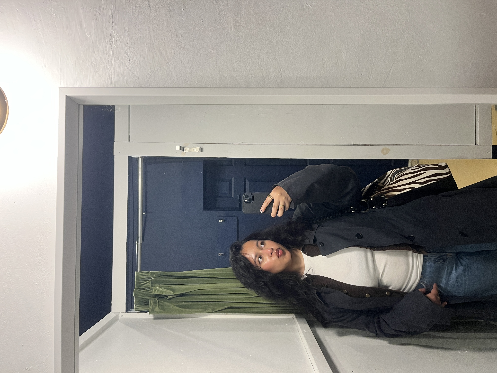
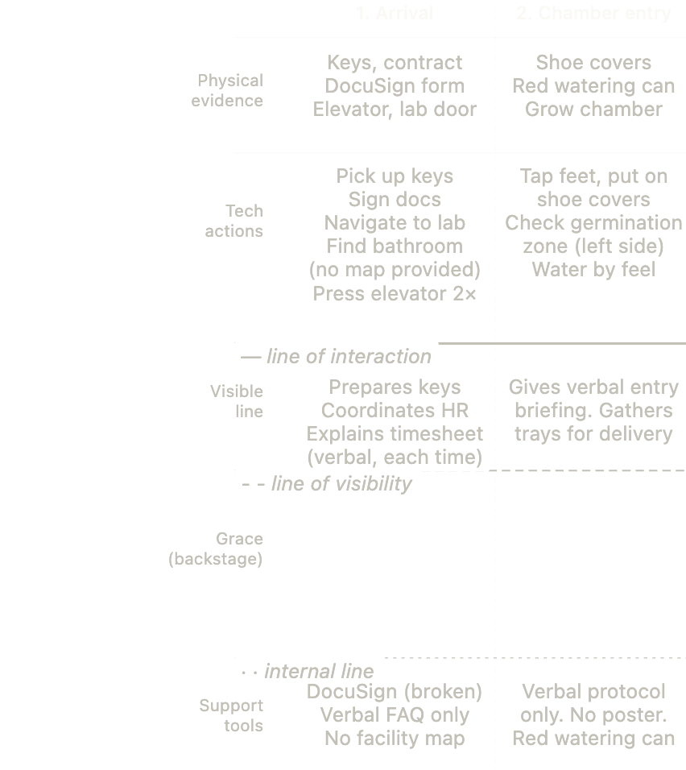

Hello, I'm
Marium Ashraf
I turn ambiguous problems into clear priorities.
From research and synthesis to recommendations — and I can build what comes next.


Hello, I'm
I turn ambiguous problems into clear priorities.
From research and synthesis to recommendations — and I can build what comes next.
Overview


Research · Strategy · Build
Equinix · Lyrata · Outlier · client projects — from discovery to recommendations to shipped solutions

B.Eng. Computer Engineering
(Major in Software Engineering)
Toronto Metropolitan University · Apr 2027
Hi! I'm Marium 👋🏽 — a Computer Engineering student majoring in Software Engineering, with experience across research, operations, AI, and enterprise technology.
I do my best work when the problem isn't defined yet: understanding what's actually happening, talking to the people involved, and figuring out what to do next.
At Lyrata, I led four days of field research to trace operational failures to a single root cause, prioritized the fix, built an AI knowledge base, and cut document lookup time ~90%. At Equinix, I ran stakeholder interviews and workflow mapping through service blueprints and recommendations for developer experience. At Riipen, I led a team through competitive analysis and a client deck with ranked tradeoffs. I placed 3rd in the WITM x CIBC ETC Case Competition (2024), co-leading a B2B accessibility strategy for SafeHaven — projected 67% employee engagement uplift and 2.0x revenue growth.
The through-line is taking something messy and making it actionable — whether that's a recommendation, a redesign, or something worth building. I ship too: backends, AI workflows, and retrieval-based tools when that's the answer.
Credentials
Vector Institute
Fall 2025
9-week cohort at the Vector Institute on making organizations actually ready to build with AI. Covered the full pipeline: data governance, prep and visualization, feature engineering, ML evaluation, NLP and LLMs, MLOps, and production deployment on GCP.
Applied it at Lyrata — mapped data workflows, identified ownership gaps across teams, and built the case for where AI enablement would actually add value vs. where it'd just add noise. Less "how to train a model," more "is your org even ready for one."
Toronto Metropolitan University
Graduating April 2027
Software Design & Architecture; Requirements Analysis & Project Management; Database Systems; Operating Systems; Algorithms & Data Structures; Engineering Economics & Ethics; Communications in Engineering.
Roles
May 2026 – Aug 2026
July 2025 – April 2026
January 2026 – April 2026
2024
November 2022 – July 2025
Focus
AI · backend · full-stack · automation · Python · SQL · APIs · RAG systems · CI/CD
Problem framing · user research · systems analysis · stakeholder interviews · synthesis · prioritization · opportunity mapping
Recommendations · tradeoff analysis · journey maps · service blueprints · process redesign · executive-ready deliverables · Figma · Lucid
Builds

Started with an ambiguous ops problem at a Toronto urban farming startup. Four days of field shadowing → 14 of 17 failures traced to one root cause. Prioritized the fix, scoped the solution, and built an AI-powered SOP knowledge base (RAG + vector search) — ~90% reduction in lookup time.
Field research · Service blueprinting · Journey mapping · Stakeholder synthesis · RAG · Python · Vector search

Identified a real gap in how people plan purchases, scoped the core decision ("should I buy this?"), and built a full-stack app around it — overlap analysis, price-per-wear scoring, review signal parsing. End-to-end from problem to shipped product.
React · Vite · Tailwind · FastAPI · SQLite · Docker · CI/CD

Full observability stack for a FastAPI service — traces, metrics, and logs wired together with Grafana, Prometheus, Tempo, and Loki. Load-tested with Locust and k6. Built to be production-grade, not just a tutorial.
FastAPI · OpenTelemetry · Grafana · Docker Compose

Streamlit spend analytics pulling from Bluecoins data — budgets, category trends, income and balance charts. ETL pipeline from CSV to SQL to UI, containerized with Docker.
Streamlit · pandas · SQLAlchemy · Docker

Serverless retirement-planning chatbot on AWS — Lex for conversational UX, Lambda for secure calculations, risk-based portfolio recommendations.
AWS Lex · Lambda · Serverless
Get in Touch
If you're hiring for people who dig into complex problems, align stakeholders, and drive work from insight to outcome — I'd love to hear from you. Available full-time April 2027.